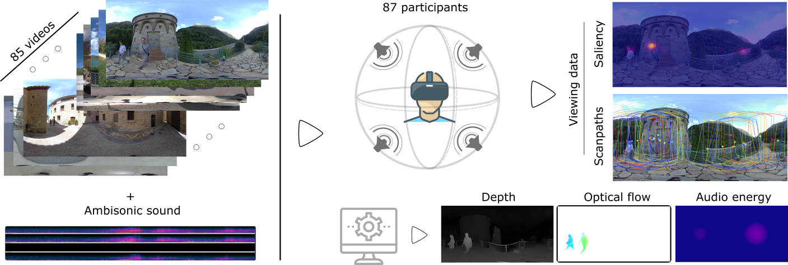
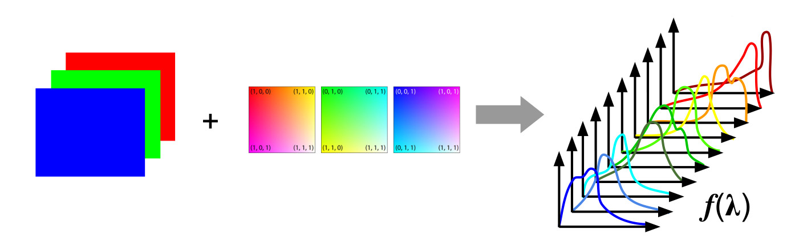

Hi, I am Pedro, nice to meet you!
I'm a PhD student at the Graphics and Imaging Lab at the University of Zaragoza. I'm under the supervision of Ana Serrano and Daniel Martin as part of the PROXIE project team.
My research interests are mainly centered around Virtual and Extended Reality, working on topics such as the study and modeling of human visual and attentive behavior, multimodality and perceptual manipulations, while trying to focus on ecological validity. I am also interested in computer graphics and real-time rendering.
Publications

Paper D-SAV360: A Dataset of Gaze Scanpaths on 360º Ambisonic Videos
IEEE Transactions on Visualization and Computer Graphics (ISMAR 2023)JCR Q1

Poster Techniques for Real-Time Spectral Rendering
XIV Jornada de Jóvenes Investigadores/as del I3A (2025)
Supervision
Nothing to see here... for now!
Teaching
Nothing to see here... for now!
Professional service
Paper reviews
| Venue | Type | Year |
|---|---|---|
| ACM Symposium on Applied Perception 2026 | Conference | 2026 |
Dissemination
| Activity | Type | Year |
|---|---|---|
| European researchers' night | General public showcase | 2026 |
Work experience
PhD Student
Relevant tools and skills: Research, XR, Eye-tracking, Face-tracking, Unity, TBD.
Research Engineer working in Large Language Models
Relevant tools and skills: Python, LLMs, Docker, Text data extraction, cleaning and augmentation, Model finetuning.
Research Intern in oceanic underwater rendering
Relevant tools and skills: C++, Python, Mitsuba2, Mitsuba3, Spectral Rendering, Path Tracing.
Research Engineer in VR, Computer Graphics and Machine Learning
Relevant tools and skills: C#, Python, Unity, Virtual Reality, Eye Tracking, Blender Add-on development, Machine Learning.
Extracurricular activity instructor for high school children
Relevant tools and skills: Scratch, GDScript, Godot, Teaching, Communication.